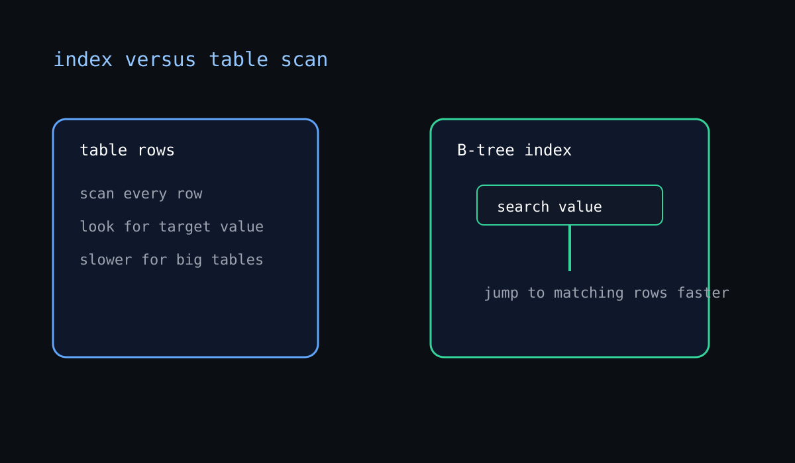

Indexes and Performance Intuition
Learn how indexes speed up lookups and when they can hurt writes.
Learning Objective
- Learn how indexes speed up lookups and when they can hurt writes.
- Explain the concept in plain language.
- Complete the lab without skipping steps.
- Know what would break if we skipped this session.
One-Hour Flow
- 0-10 min: pre-quiz and warm-up discussion.
- 10-25 min: concept explanation and visual walkthrough.
- 25-45 min: lab in pgAdmin with live edits and retries.
- 45-55 min: review mistakes, compare answers, and reinforce the mental model.
- 55-60 min: post-quiz and commit checkpoint.
Pre-quiz
Answer these before the concept section. We are checking starting understanding, not perfection.
What best describes the topic of Indexes and Performance Intuition?
Which lab action would you expect in this session?
What earlier idea supports this lesson most directly?
Which detail should you watch most closely in the quiz?
What should you be able to explain by the end of this session?
Concept
Underlying idea: CREATE INDEX, selective columns, planner intuition
This lesson follows the same documentation-first format as RL-AI: pre-quiz, concept, lab, commit checkpoint, and post-quiz.
Use pgAdmin locally to practice the SQL directly against a database you own.
Schema Story
Fictional database: We use one shared practice schema called world_learning.
countries(id, name, region, population, capital, region_id)regions(id, name)cities(id, name, country_id)languages(id, name)country_languages(country_id, language_id)
For transaction and admin lessons, we also mention helper tables like accounts, draft_rows, and imported_countries so the operational examples stay realistic.
The exact table names change a little by lesson, but they all live in the same fictional database so the course stays coherent.
Practice Dataset
Use these sample rows when you picture the query in your head. The examples are tiny on purpose so you can reason about every result.
| Table | Sample Columns | Example Row |
|---|---|---|
countries | id, name, region, population, capital, region_id | 1 | Canada | Americas | 38000000 | Ottawa | 1 |
regions | id, name | 1 | Americas |
cities | id, name, country_id | 1 | Ottawa | 1 |
| Table | Sample Columns | Example Row |
|---|---|---|
languages | id, name | 1 | English |
country_languages | country_id, language_id | 1 | 1 |

Diagram Example
This diagram shows the main idea for Session 25: CREATE INDEX, selective columns, planner intuition. Read it left to right, then connect each part back to the lab.
The colors and arrows are there to show flow, identity, or dependency. Use them to explain the lesson out loud before the lab.
Big Idea
Learn how indexes speed up lookups and when they can hurt writes.
When you work through this topic, do not think of it as a single trick. Think of it as part of how a database team reasons about data shape, correctness, and readable queries.
For this lesson, the thing to keep repeating is: CREATE INDEX, selective columns, planner intuition.
Worked Walkthrough
- Look at the problem first, not the syntax.
- Identify the data object you are touching, such as a table, row, filter, or relationship.
- Write the smallest possible SQL or database action that proves the idea.
- Inspect the result before you move on, even if it looks obvious.
SQL Examples
CREATE INDEX idx_countries_region ON countries (region);CREATE INDEX idx_countries_population ON countries (population DESC);These are starter examples. Change the table name, filter, or output column and predict what happens before you run them.
Common Mistakes
- Using the right syntax but the wrong mental model.
- Changing too many things at once and losing track of what changed the result.
- Skipping the check step and assuming the first answer is correct.
Teaching Notes
Say the concept out loud in plain English before you touch the keyboard.
Ask yourself which part is the data, which part is the rule, and which part is the result.
If the lesson feels easy, slow down and explain why it works. That is where the understanding lives.
Lab
This is the hands-on checkpoint for the session. Work in small steps, verify every result, and only move forward once the current screen or query output matches the lesson goal.
Lab Setup
- Open pgAdmin and connect to the local PostgreSQL server.
- Open the lesson database or schema used in this session.
- Keep the lesson notes visible so you can compare each step with the prompt.
Step-by-Step
- Read the objective out loud and restate it in plain English.
- Find the table, view, query, or database object that this lesson is about.
- Complete the core action for the lab: Add an index and compare query behavior.
- Run one small variation and predict the result before you execute it.
- Write down anything unexpected, even if the query still worked.
- Explain the result to yourself before you leave the lab section.
Success Criteria
- You can describe what changed after the lab action.
- You can point to the exact SQL or UI action that proved the concept.
- You can predict a one-step variation before trying it.
Common Mistakes
- Skipping the setup step and changing too many things at once.
- Reading the answer before checking the output yourself.
- Not naming the specific table, column, or database object involved.
Extra Practice
- Redo the lab without looking at the instructions.
- Change one value or condition and predict the new output first.
- Tell the story of the lesson in one minute using the words CREATE INDEX, selective columns, planner intuition.
Expected Files
docs/sessions/session-25/index.htmldocs/labs/index.htmldocs/quizzes/index.html
Commit Checkpoint
git add .
git commit -m "session-25: indexes and performance intuition"Post-quiz
Retake the same ideas after the lab. A score below 80% means we revisit the lesson.
Can you explain CREATE INDEX, selective columns, planner intuition?
Can you describe the lab goal from memory?
Which syntax or database object matters most here?
What breaks if this concept is misunderstood?
What is the next idea this session prepares you for?
Reflection
- What changed in your understanding after the lab?
- What would fail if we used the wrong syntax here?
- Which later session depends on this one?
- What part still feels fuzzy enough to revisit once more?
What Breaks If We Skip This?
If this concept is shaky, later lessons in joins, transactions, performance, or schema design become much harder to reason about.
What We Learned
SQL/Postgres concept mastered: CREATE INDEX, selective columns, planner intuition
Next session: Reading Query Plans